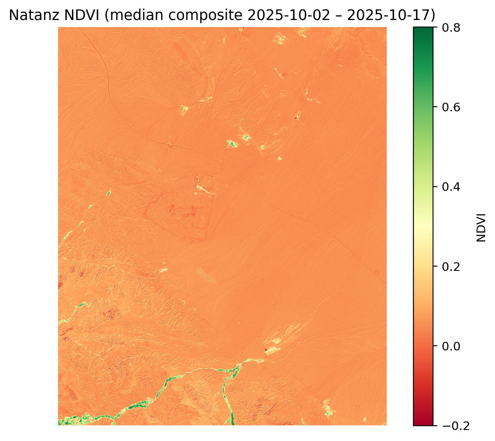
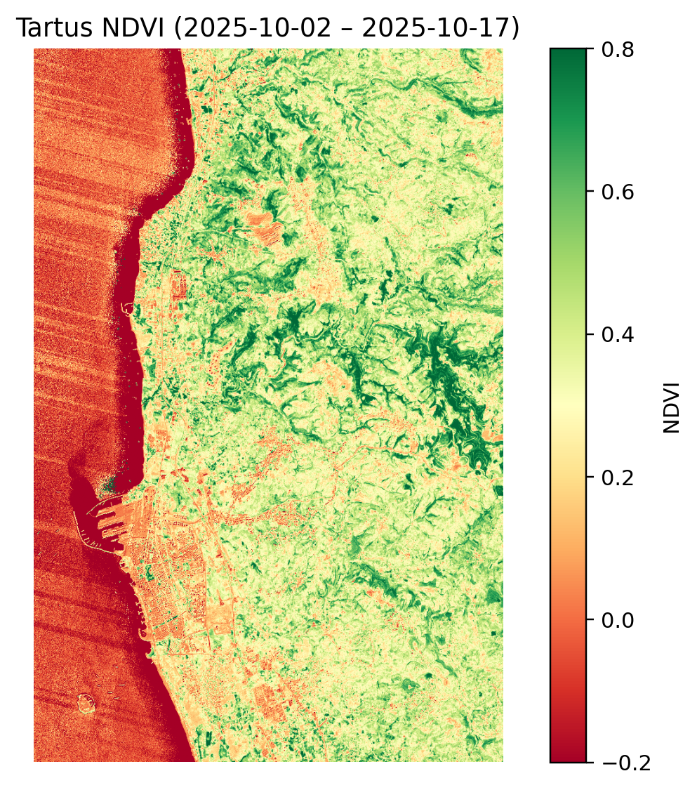
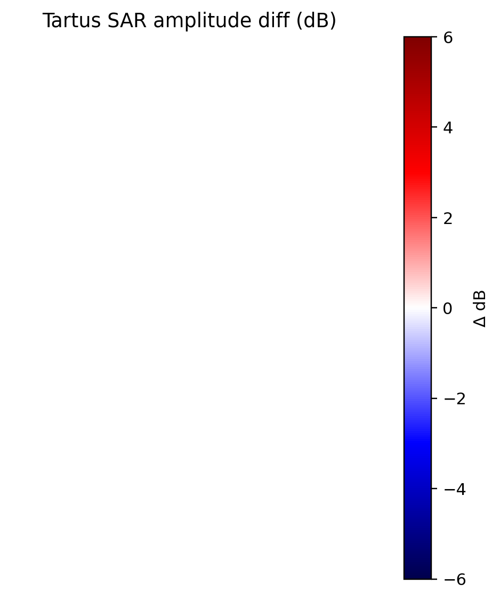
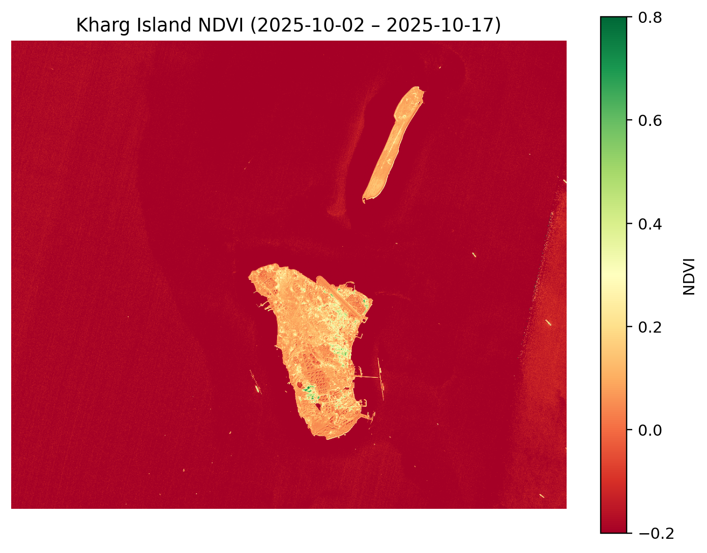

AGROSAT – ISR
Snapshot (Natanz, Tartus, Kharg Island)
Visual situational summary generated 2025‑10‑17 using Sentinel‑2
(true colour & NDVI) and Sentinel‑1 (VV amplitude/z‑score). All
imagery pulled via Sentinel Hub (Client Credentials – wprowadź własne
ID/Secret podczas uruchamiania).
Dlaczego te lokalizacje?
Natanz (Iran) – serce programu wzbogacania;
wzmożona aktywność logistyczna lub nowe zabudowania to natychmiastowy
sygnał strategiczny.
Tartus (Syria) – główny port wojskowy Federacji
Rosyjskiej na Morzu Śródziemnym; monitorujemy rotacje jednostek i
zabezpieczenie dostaw.
Kharg Island (Iran) – największy terminal
eksportowy ropy; zmiany w SAR wskazują na intensywność załadunków lub
sabotaż.
Dobór tych trzech punktów daje „pareto” dla regionu: nuklearne
zaplecze Iranu, rosyjska projekcja siły i krwioobieg ropy. Jeden zestaw
pipeline’u pokrywa więc kluczowe węzły logistyczno‑wojskowe Bliskiego
Wschodu.
1. Natanz Nuclear Complex
(Iran)
Context: Iranian uranium enrichment site (33.72 N,
51.73 E); kluczowy ośrodek programu nuklearnego.
Observation (true colour): 30‑dniowa kompozycja z
najmniejszym zachmurzeniem (gamma 0.35) – widoczne drogi serwisowe,
barykady ziemne, place składowe.
Kluczowe elementy: Strefa zabezpieczenia na wschód
(świadczy o aktywności ochrony), pas logistyczny prowadzący do podziemi,
brak świeżych wycinek roślinności.

Natanz NDVI
NDVI median (2–17 Oct 2025): mean ≈ 0.07, max
≈ 0.84 – wegetacja ograniczona do starych kanałów nawodnień; brak nowych
stref zielonych.
Wniosek NDVI: brak przygotowań do nowych maskowań
roślinnych; widoczne jedynie istniejące nasadzenia ochronne.
Sentinel‑1 VV (17/11/05 Oct 2025): z‑score map
shows no pixels above ±2σ → brak świeżych radarowych anomalii (konwoje /
nowe dachy). ΔdB w zakresie ±3 dB – stabilna scena.
Interpretacja: Operacje ciągłe, brak sygnałów nagłej
rozbudowy. Monitorować co 6 dni dla ruchów na drogach dojazdowych.
Warto obserwować: kontrast między wschodnią strefą
ochrony a południowym wjazdem – to tam najpierw pojawią się zwiększone
transporty.
2. Tartus Naval Base (Syria)
Widoczne struktury: doki, falochrony i place
ładunkowe; rozciągnięcie gamma uwypukla sylwetki jednostek i magazyny
paliwowe.
Infra: aktywne światła portowe, ślady ruchu
kołowego wzdłuż linii kolejowej.

Tartus NDVI
NDVI mean ≈ 0.24 – utrzymane pasy zieleni (kwatery
mieszkalne i strefy techniczne); stabilna eksploatacja.

Sentinel‑1 (18/12/06 Oct 2025) – brak pików > 2σ; ΔdB < ±3 dB.
Żadnych masywnych zmian w odbiciu radarowym (np. nowa jednostka
wysokotonowa) w badanym oknie.
Interpretacja: Logistyka portowa w normalnych
ramach; brak sygnału mobilizacji. Podwyższona baza wsparcia – trzymać
alert SAR, szczególnie gdy zacznie się kumulacja tankowców.
Warto obserwować: zachodni basen portowy – różnice ΔdB
powyżej 3 dB oznaczają nowy tonaż przy nabrzeżach.
3. Kharg Island Oil Terminal
(Iran)
True colour: kompleks zbiorników, doki oraz
rurociągi; rozciągnięcie jasności eksponuje potencjalne obszary
napraw.
Ślady aktywności: świeże ślady na drogach
technicznych, brak nietypowych zacienień konstrukcji.

Kharg NDVI
NDVI mean ≈ −0.20 – zdominowane przez
infrastrukturę, pojedyncze punkty zieleni przy bazach załogowych.
Sentinel‑1 (18/12/06 Oct 2025): z‑score < 2σ; ΔdB ~ ±2 dB. Brak
świeżych sygnałów wzmożonego tankowania / uszkodzeń.
Interpretacja: Ruch terminalu w normie. Zwracać
uwagę na zmiany > +3 dB wzdłuż nabrzeży – sugerują cumowanie VLCC.
Warto obserwować: północne nabrzeże – tam najszybciej
pojawiają się odchylenia z-score przy wzmożonych przeładunkach.
4. Pareto – co
monitorować w pierwszej kolejności
Tartus SAR – jedyny punkt o stałej obecności
sprzętu ciężkiego; wzrost z‑score przy nabrzeżach = natychmiastowy
alert.
Natanz drogi dojazdowe – NDVI+SAR każdorazowo po
burzach piaskowych; anomalie mogą wskazywać na wzmożony transport
podziemny.
Kharg ΔdB – monitorować podczas skoków cen ropy:
różnice > +3 dB świadczą o nagłych przeładunkach.
Reszta AOI może być śledzona w interwale tygodniowym; te trzy
wskaźniki decydują o 80 % potencjalnych „surge” w regionie.
Jak powtórzyć analizę
Ustaw zmienne środowiskowe z własnym **SENTINELHUB_CLIENT_ID /
_SECRET** (konto Sentinel Hub lub Copernicus Dataspace).